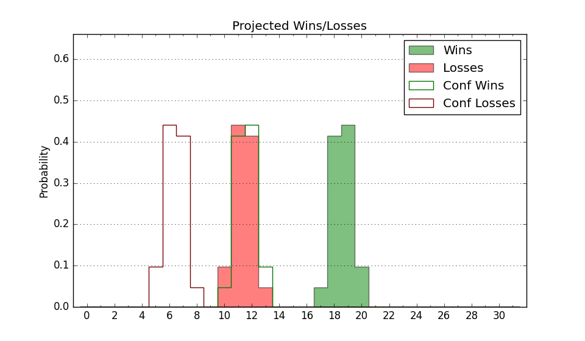

| Home | Game Probabilities | Conferences | Preseason Predictions | Odds Charts | NCAA Tournament |
| City: | St. Louis, Missouri | |
| Conference: | Atlantic 10 (3rd)
| |
| Record: | 10-5 (Conf) 17-10 (Overall) | |
| Ratings: | Comp.: 5.9 (111th) Net: 5.9 (111th) Off: 109.3 (69th) Def: 103.4 (184th) SoR: 2.7 (103rd) |
| Remaining | ||||||
|---|---|---|---|---|---|---|
| Date | Opponent | Win Prob | Pred. | |||
| 2/25 | Loyola Chicago (261) | 88.4% | W 80-65 | |||
| 2/28 | @ VCU (74) | 23.1% | L 67-76 | |||
| 3/4 | Dayton (68) | 48.0% | L 68-69 | |||
| Previous | Game Score | |||||
| Date | Opponent | Win Prob | Result | Off | Def | Net |
| 11/7 | Murray St. (219) | 84.0% | W 91-68 | 4.5 | 8.0 | 12.6 |
| 11/12 | Evansville (347) | 95.7% | W 83-65 | 0.2 | -2.9 | -2.7 |
| 11/15 | Memphis (47) | 40.2% | W 90-84 | 9.5 | 0.2 | 9.7 |
| 11/19 | (N) Maryland (18) | 19.1% | L 67-95 | -4.8 | -24.0 | -28.8 |
| 11/20 | (N) Providence (38) | 23.6% | W 76-73 | 8.2 | 8.6 | 16.8 |
| 11/27 | @Auburn (30) | 13.3% | L 60-65 | -15.5 | 23.8 | 8.3 |
| 11/30 | Tennessee St. (272) | 89.5% | W 80-63 | -2.4 | 2.0 | -0.3 |
| 12/3 | Southern Illinois (130) | 69.0% | W 85-72 | 16.6 | -10.2 | 6.5 |
| 12/6 | @Iona (78) | 24.0% | L 62-84 | -11.3 | -1.8 | -13.2 |
| 12/10 | Boise St. (27) | 32.8% | L 52-57 | -21.2 | 23.9 | 2.7 |
| 12/17 | Drake (76) | 51.2% | W 83-75 | 14.9 | -4.1 | 10.8 |
| 12/21 | SIU Edwardsville (220) | 84.0% | L 67-69 | -15.5 | -11.6 | -27.2 |
| 12/31 | @Saint Joseph's (212) | 58.7% | W 83-78 | -0.7 | 2.5 | 1.9 |
| 1/4 | @Massachusetts (193) | 53.2% | L 81-90 | 0.5 | -14.0 | -13.5 |
| 1/7 | St. Bonaventure (184) | 78.3% | W 78-55 | 15.3 | 11.0 | 26.3 |
| 1/11 | George Mason (138) | 71.3% | W 63-62 | -15.5 | 5.7 | -9.8 |
| 1/14 | @George Washington (216) | 60.4% | W 81-74 | 3.3 | 8.6 | 11.9 |
| 1/18 | @Loyola Chicago (261) | 69.1% | W 76-59 | 11.8 | 6.6 | 18.4 |
| 1/21 | La Salle (229) | 85.3% | W 84-71 | 5.0 | -3.3 | 1.8 |
| 1/27 | @Davidson (167) | 48.1% | W 74-70 | 6.8 | 4.6 | 11.4 |
| 1/31 | @Fordham (151) | 45.5% | L 65-75 | -13.4 | 1.2 | -12.2 |
| 2/3 | VCU (74) | 50.6% | L 65-73 | -2.6 | -4.4 | -7.0 |
| 2/7 | Rhode Island (251) | 87.6% | W 76-71 | -11.9 | -1.8 | -13.7 |
| 2/10 | @Dayton (68) | 21.3% | L 56-70 | -2.5 | -6.3 | -8.8 |
| 2/15 | Davidson (167) | 75.9% | W 78-65 | -1.5 | 7.4 | 5.9 |
| 2/18 | Duquesne (120) | 66.6% | W 90-85 | 11.7 | -12.1 | -0.4 |
| 2/21 | @Richmond (163) | 47.2% | L 78-81 | 8.6 | -17.9 | -9.3 |
| Stats & Trends | |||||
|---|---|---|---|---|---|
| Current | Day | Week | Month | Season | |
| Composite | 5.9 | -0.3 | -0.2 | -2.0 | -8.4 |
| Comp Rank | 111 | -2 | -1 | -12 | -63 |
| Net Efficiency | 5.9 | -0.3 | -0.1 | -1.6 | -- |
| Net Rank | 111 | -2 | -- | -10 | -- |
| Off Efficiency | 109.3 | +0.3 | +0.9 | -0.1 | -- |
| Off Rank | 69 | +3 | +9 | -17 | -- |
| Def Efficiency | 103.4 | -0.6 | -1.0 | -1.5 | -- |
| Def Rank | 184 | -12 | -17 | -1 | -- |
| SoS Rank | 115 | +4 | -7 | +5 | -- |
| Exp. Wins | 18.6 | -0.5 | +0.1 | -0.9 | -1.5 |
| Exp. Conf Wins | 11.6 | -0.5 | +0.1 | -0.9 | -0.2 |
| Conf Champ Prob | 3.9 | -10.4 | -8.4 | -24.1 | -19.6 |

| Advanced Stats | ||
|---|---|---|
| Stat | Value | Rank |
| Off Eff FG % | 0.541 | 51 |
| Off Ast Ratio | 0.179 | 17 |
| Off ORB% | 0.289 | 114 |
| Off TO Rate | 0.145 | 85 |
| Off FT Ratio | 0.311 | 191 |
| Def Eff FG % | 0.475 | 74 |
| Def Ast Ratio | 0.138 | 142 |
| Def ORB% | 0.250 | 103 |
| Def TO Rate | 0.126 | 346 |
| Def FT Ratio | 0.307 | 168 |